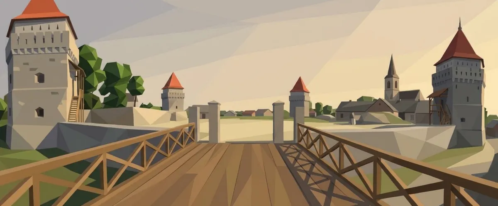

Вежі та в'їзди
Окрім замків, міста Поділля захищали системи міських укріплень: мури з вежами, брами та мости через рови. Кожна вежа мала своє призначення — охорону брами, контроль переправи або фланговий обстріл мурів.

В'їзд до фортеці зазвичай вів через міст і браму, які за потреби можна було перекрити. Дерев'яні мости простіше було зруйнувати під час облоги, а кам'яні — укріплювали додатковими вежами.
